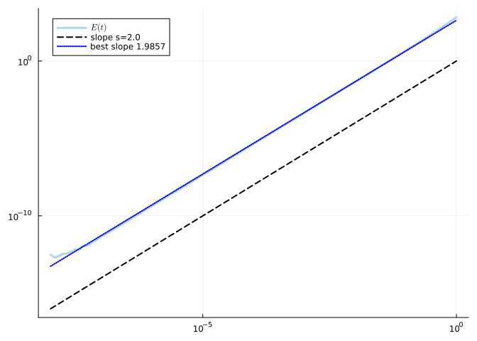
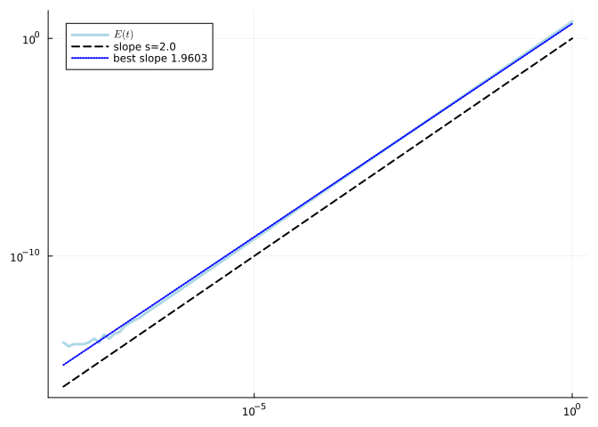
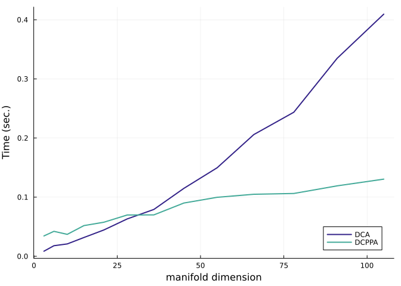
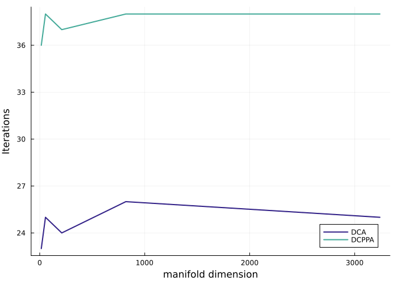
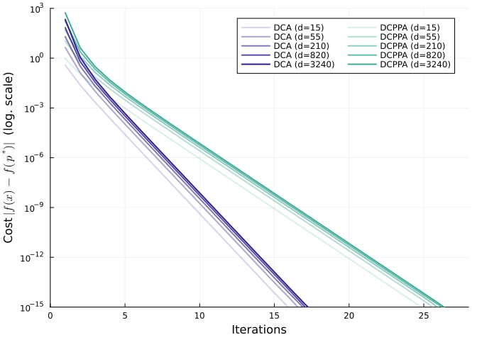

Benchmark of the Difference of Convex Algorithms
Ronny Bergmann 2023-06-06
Introduction
In this Benchmark we compare the Difference of Convex Algprithm (DCA) [BFSS23] and the Difference of Convex Proximal Point Algorithm (DCPPA) [SO15] which solve Difference of Convex (DC) problems of the form. This Benchmark reproduces the results from [BFSS23], Section 7.1.
\[\operatorname*{arg\,min}_{p\in\mathcal M}\ \ g(p) - h(p)\]
where $g,h\colon \mathcal M \to \mathbb R$ are geodesically convex function on the Riemannian manifold $\mathcal M$.
using LinearAlgebra, Random, Statistics, BenchmarkTools
using Manifolds, Manopt, ManoptExamples
using NamedColors, Plots
Random.seed!(42)and we load a few nice colors
paul_tol = load_paul_tol()
indigo = paul_tol["mutedindigo"]
teal = paul_tol["mutedteal"]The DC Problem
We start with defining the two convex functions $g,h$ and their gradients as well as the DC problem $f$ and its gradient for the problem
\[ \operatorname*{arg\,min}_{p\in\mathcal M}\ \ \bigl( \log\bigr(\det(p)\bigr)\bigr)^4 - \bigl(\log \det(p) \bigr)^2.\]
where the critical points obtain a functional value of $-\frac{1}{4}$.
where $\mathcal M$ is the manifold of symmetric positive definite (SPD) matrices with the affine invariant metric, which is the default.
We first define the corresponding functions
g(M, p) = log(det(p))^4
h(M, p) = log(det(p))^2
f(M, p) = g(M, p) - h(M, p)and their gradients
grad_g(M, p) = 4 * (log(det(p)))^3 * p
grad_h(M, p) = 2 * log(det(p)) * p
grad_f(M, p) = grad_g(M, p) - grad_h(M, p)which we can use to verify that the gradients of $g$ and $h$ are correct. We use for that
n = 6
M = SymmetricPositiveDefinite(n)
p0 = log(n) * Matrix{Float64}(I, n, n);
X0 = 1 / n * Matrix{Float64}(I, n, n);to tall both checks
check_gradient(M, g, grad_g, p0, X0; plot=true)
and
check_gradient(M, h, grad_h, p0, X0; plot=true)
which both pass the test. We continue to define their inplace variants
function grad_g!(M, X, p)
copyto!(M, X, p)
X .*= 4 * (log(det(p)))^3
return X
end
function grad_h!(M, X, p)
copyto!(M, X, p)
X .*= 2 * (log(det(p)))
return X
end
function grad_f!(M, X, p)
grad_g!(M, X, p)
Y = copy(M, p, X)
grad_h!(M, Y, p)
X .-= Y
return X
endAnd compare times for both algorithms, with a bit of debug output.
@time p_min_dca = difference_of_convex_algorithm(
M,
f,
g,
grad_h!,
p0;
grad_g=grad_g!,
gradient=grad_f!,
evaluation=InplaceEvaluation(),
debug=[
:Iteration,
(:Cost, "f(p): %1.9f"),
(:GradientNorm, " |grad_f(p)|: %1.9f"),
(:Change, " |δp|: %1.9f"),
:Stop,
5,
"\n",
],
stopping_criterion=StopAfterIteration(5000) | StopWhenGradientNormLess(1e-10),
sub_state=TrustRegionsState(M, copy(M, p0)),
sub_stopping_criterion=StopAfterIteration(100) | StopWhenGradientNormLess(1e-10),
);Initial f(p): 137.679053470
# 5 f(p): -0.249956120 |grad_f(p)|: 0.046196628 |δp|: 0.201349127
# 10 f(p): -0.249999999 |grad_f(p)|: 0.000187633 |δp|: 0.000626103
# 15 f(p): -0.250000000 |grad_f(p)|: 0.000000772 |δp|: 0.000002574
# 20 f(p): -0.250000000 |grad_f(p)|: 0.000000003 |δp|: 0.000000011
The algorithm reached approximately critical point after 24 iterations; the gradient norm (3.9079528504063575e-11) is less than 1.0e-10.
6.570523 seconds (8.12 M allocations: 555.671 MiB, 3.50% gc time, 99.32% compilation time)The cost is
f(M, p_min_dca)-0.25Similarly the DCPPA performs
@time p_min_dcppa = difference_of_convex_proximal_point(
M,
grad_h!,
p0;
g=g,
grad_g=grad_g!,
λ=i -> 1 / (2 * n),
cost=f,
gradient=grad_f!,
debug=[
:Iteration,
(:Cost, "f(p): %1.9f"),
" ",
(:GradientNorm, "|grad_f(p)|: %1.10f"),
(:Change, "|δp|: %1.10f"),
:Stop,
5,
"\n",
],
evaluation=InplaceEvaluation(),
stepsize=ConstantStepsize(1.0),
stopping_criterion=StopAfterIteration(5000) | StopWhenGradientNormLess(1e-10),
sub_state=TrustRegionsState(M, copy(M, p0)),
sub_stopping_criterion=StopAfterIteration(100) | StopWhenGradientNormLess(1e-10),
);Initial f(p): 137.679053470
# 5 f(p): -0.248491803 |grad_f(p)|: 0.2793140152|δp|: 0.2753827692
# 10 f(p): -0.249998655 |grad_f(p)|: 0.0080437374|δp|: 0.0050891316
# 15 f(p): -0.249999999 |grad_f(p)|: 0.0002507329|δp|: 0.0001567676
# 20 f(p): -0.250000000 |grad_f(p)|: 0.0000078348|δp|: 0.0000048968
# 25 f(p): -0.250000000 |grad_f(p)|: 0.0000002448|δp|: 0.0000001530
# 30 f(p): -0.250000000 |grad_f(p)|: 0.0000000076|δp|: 0.0000000048
# 35 f(p): -0.250000000 |grad_f(p)|: 0.0000000002|δp|: 0.0000000001
The algorithm reached approximately critical point after 37 iterations; the gradient norm (5.458071707233144e-11) is less than 1.0e-10.
1.676814 seconds (1.77 M allocations: 123.378 MiB, 3.58% gc time, 94.55% compilation time)It needs a few more iterations, but the single iterations are slightly faster. Both obtain the same cost
f(M, p_min_dcppa)-0.25Benchmark I: Time comparison
We compare both solvers first with respect to time. We initialise two vectors to collect the results and a range of natrix sizes to test
dca_benchmarks = Dict{Int,BenchmarkTools.Trial}()
dcppa_benchmarks = Dict{Int, BenchmarkTools.Trial}()
N_max=14
N = 2:N_maxand run a benchmark for both algorithms
for n in N
Mn = SymmetricPositiveDefinite(n)
pn = log(n) * Matrix{Float64}(I, n, n)
bdca = @benchmark difference_of_convex_algorithm(
$Mn,
$f,
$g,
$grad_h!,
$pn;
grad_g=$grad_g!,
gradient=$grad_f!,
evaluation=InplaceEvaluation(),
stopping_criterion=StopAfterIteration(5000) | StopWhenGradientNormLess(1e-10),
sub_state=TrustRegionsState($Mn, copy($Mn, $pn)),
sub_stopping_criterion=StopAfterIteration(100) | StopWhenGradientNormLess(1e-10),
)
dca_benchmarks[n] = bdca
bdcppa = @benchmark difference_of_convex_proximal_point(
$Mn,
$grad_h!,
$pn;
g=$g,
grad_g=$grad_g!,
λ=i -> 1 / (2 * n),
cost=f,
gradient=grad_f!,
evaluation=InplaceEvaluation(),
stepsize=ConstantStepsize(1.0),
stopping_criterion=StopAfterIteration(5000) | StopWhenGradientNormLess(1e-10),
sub_state=TrustRegionsState($Mn, copy($Mn, $pn)),
sub_stopping_criterion=StopAfterIteration(100) | StopWhenGradientNormLess(1e-10),
)
dcppa_benchmarks[n] = bdcppa
endSince we want to plot this versus the manifold dimension, we also create a vector for those and convert the times to seconds
dims = [manifold_dimension(SymmetricPositiveDefinite(n)) for n in N]
dca_times = [mean(dca_benchmarks[n]).time / 1e9 for n in N]
dcppa_times = [mean(dcppa_benchmarks[n]).time / 1e9 for n in N]plot(; legend=:bottomright, xlabel="manifold dimension", ylabel="Time (sec.)")
plot!(dims, dca_times; label="DCA", color=indigo, linewidth=2)
plot!(dims, dcppa_times; label="DCPPA", color=teal, linewidth=2)
Benchmark II: Iterations and cost.
As a second benchmark, let’s collect the number of iterations needed and the development of the cost over dimensions.
N2 = [5,10,20,40,80]
dims2 = [manifold_dimension(SymmetricPositiveDefinite(n)) for n in N2]
dca_iterations = Dict{Int,Int}()
dca_costs = Dict{Int,Vector{Float64}}()
dcppa_iterations = Dict{Int,Int}()
dcppa_costs = Dict{Int,Vector{Float64}}()@time for n in N2
println(n)
Mn = SymmetricPositiveDefinite(n)
pn = log(n) * Matrix{Float64}(I,n,n);
@time dca_st = difference_of_convex_algorithm(
Mn, f, g, grad_h!, pn;
grad_g=grad_g!,
gradient=grad_f!,
evaluation = InplaceEvaluation(),
stopping_criterion = StopAfterIteration(5000) | StopWhenGradientNormLess(1e-10),
sub_state = TrustRegionsState(Mn, copy(Mn, pn)),
sub_stopping_criterion = StopAfterIteration(100) | StopWhenGradientNormLess(1e-10),
record = [:Iteration, :Cost],
return_state = true,
);
dca_costs[n] = get_record(dca_st, :Iteration, :Cost)
dca_iterations[n] = length(dca_costs[n])
@time dcppa_st = difference_of_convex_proximal_point(
Mn, grad_h!, pn;
g=g,
grad_g=grad_g!,
λ = i -> 1/(2*n),
cost = f,
gradient= grad_f!,
evaluation = InplaceEvaluation(),
stepsize = ConstantStepsize(1.0),
stopping_criterion = StopAfterIteration(5000) | StopWhenGradientNormLess(1e-10),
sub_state = TrustRegionsState(Mn, copy(Mn, pn)),
sub_stopping_criterion = StopAfterIteration(100) | StopWhenGradientNormLess(1e-10),
record = [:Iteration, :Cost],
return_state = true,
);
dcppa_costs[n] = get_record(dcppa_st, :Iteration, :Cost)
dcppa_iterations[n] = length(dcppa_costs[n])
endThe iterations are like
plot(; legend=:bottomright, xlabel="manifold dimension", ylabel="Iterations")
plot!(dims2, [values(dca_iterations)...]; label="DCA", color=indigo, linewidth=2)
plot!(dims2, [values(dcppa_iterations)...]; label="DCPPA", color=teal, linewidth=2)
And for the developtment of the cost

where we can see that the DCA needs less iterations than the DCPPA.
Literature
- [BFSS23]
-
R. Bergmann, O. P. Ferreira, E. M. Santos and J. C. Souza. The difference of convex algorithm on Hadamard manifolds, arXiv preprint (2023).
- [SO15]
-
J. C. Souza and P. R. Oliveira. A proximal point algorithm for DC fuctions on Hadamard manifolds. Journal of Global Optimization 63, 797–810 (2015).